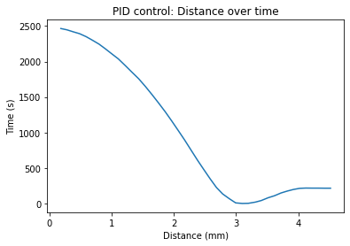
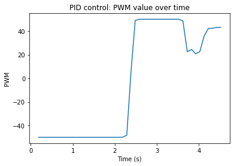

The purpose of this lab is to set up PID control on the robot. I chose to implement the entire controller, as I found it to be very beneficial.
Setup
There is no real setup for this lab other than choosing a task. I chose to do task A, which is to drive at a wall using PID, and stop at 300mm.
Lab Sections
Task A: Don't hit the wall!!
I began this lab by setting up my P control. The code for the P is simple, and can be seen below:
int dist = getFrontDist();
float error = float(val - dist);
This is all there is to calculate the error for the P term. The error is very intuitive to understand; it's just how much further you have to go until you reach your goal. In this case 300mm, represented by the val term. I started with a P constant of 1 and worked my way down until the robot didn't crash into a wall.
I didn't spend too much time messing with it to begin with, as I new it would need to be changed later. I settled on .8 to start.
After having the P term implemented, I added the I term. The I term is important for this robot due to its weak motors. The robot will often end up with some steady state error near its goal or will have trouble when first starting to move when driving at low speeds.
The code for the I term can be seen below:
if(ctr >= STARTID){
//INTEGRAL TERM
if(currState != prevState)
integral = 0;
else
integral += error*dt;
// clamp
if(integral > MAX_INTEGRAL)
integral = MAX_INTEGRAL;
else if(integral < -1*MAX_INTEGRAL)
integral = -1*MAX_INTEGRAL;
if(error == 0)
integral = 0;
}
This code begins with a conditional. A counter must be reached before the integral term can be used. STARTID is a constant set to 10. The point of this is to reduce integrator windup, which was an issue I face for a while.
Next is another conditional for the robot’s state. This is also to remove windup. The state indicates if the robot is going forwards or backwards. If the robot has windup when switching states, the value written to the robot will be messed up.
To fix this, I reset the integrator whenever a state is switched. The else statement is the actual integrator term. This term sums up the error over time and is the area under the error curve. Finally, the clamp is used to set a max integral term.
If the integrator gets too large, it may take complete control over the P and D terms. The clamp sets a max value the integral term can have. I settled on an integral term of .025. This seems high but works very well. I believe the reason it works when
this large is because of the slow PID loop. Every loop waits for a sensor reading, so the integrator does not accumulate that much over the short period of time the robot drives.
Finally, the derivative term. This term is actually withing the if(ctr >= STARTID) with the I term.
The derivative term is used for breaking. The derivative term was the least needed for my robot, and often made things worse. However, when it works it makes a massive difference. With an aggressive D constant of .3, I was able to stop on a dime, but this was unreliable. I kept the term at .12, which makes a consistent difference,
but overshooting would still happen. The D term is the slope of the error graph. This can be seen by the lines float dP = error-prevError; and derivative = dP/dt;. The derivative term
is also passed through a filter. This part was extremely important to prevent huge fluctuations.
The control term for the motors is then decided with the line float control = error*kp + integral*ki + derivative*kd; The control term is fed into some logic below:
// if need to go forward
if(control < -50){
counter = 0;
control *= -1;
if(control > thisMax){
forward(thisMax);
}
else{
forward(control);
}
currState = 0;
}
// if need to reverse
else if(control > 50){
counter = 0;
if(control > thisMax){
reverse(thisMax);
}
else{
reverse(control);
}
currState = 1;
}
else{
halt();
}
This logic checks if the control is greater than 50, less than -50, or between. Any values between those two counts as arriving at the destination, and the robot will halt.
Less than 50 means the car must go forward. However, the term written to the motors must be positive. So, this term is immediately multiplied by a -1. Logic is then used to determine
if the control value is greater than the robot’s maximum allowable speed. If it is, the maxSpeed is written instead of control. otherwise, control is written. If control is greater than 50,
the car must reverse. The same logic applies here that applied to going forward.
I was able to collect data from my PID run. The first graph is of the distance over time.

This graph shows the movement of the robot. It gradually speeds up, as can be seen by the increasing slope, then over shoots and reverses a little bit. This follows with the video at the end.
The next graph is the pwm values over time

This one is a little weird since my PID is aggressive and overshoots a little. The extreme transition from negative to positive show the change from forwards movement to backwards. Due to my dead band of 50, the robot settles at a pwm value of around 40. The video
demonstrating my PWM can be seen below. The robot comes extremely close to hitting the wall but doesn't actually hit. I felt this extreme movement for my robot was worth it. Have a perfect PID would require driving the robot at extremely slow speeds due to the slow sensors.
I was able to drive my robot at a reasonably fast speed, but at the cost of some overshoot.